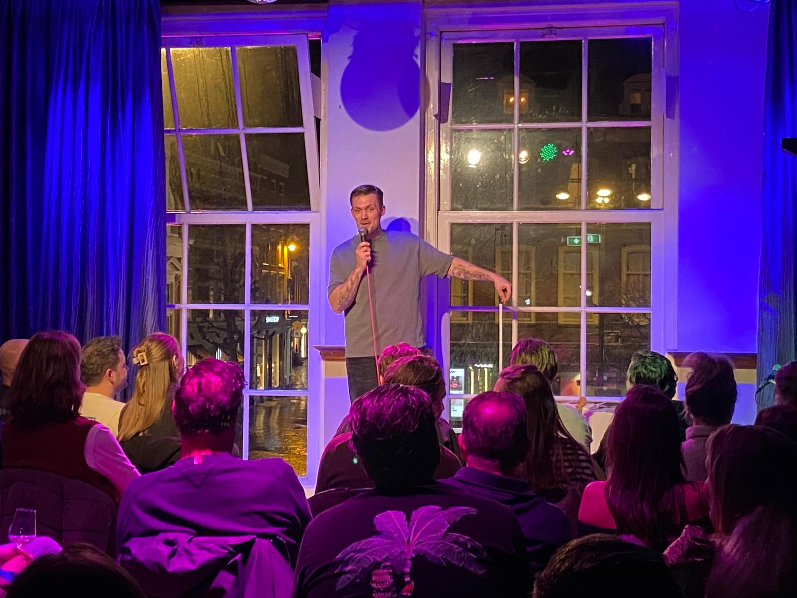
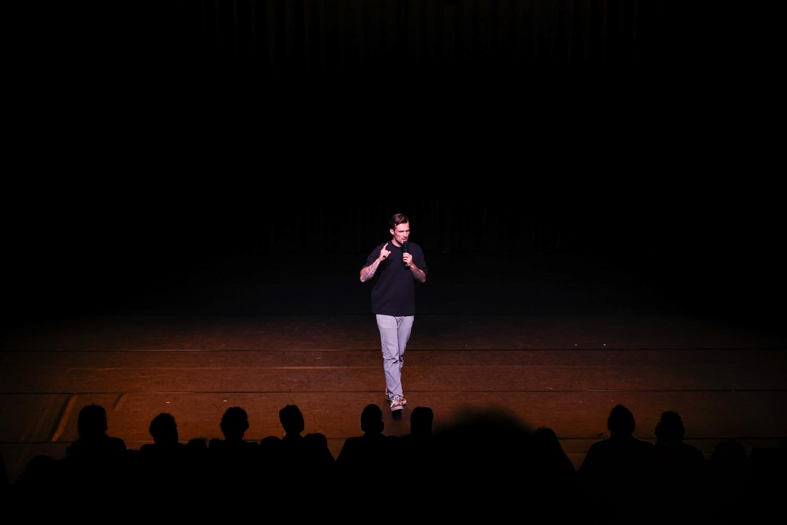
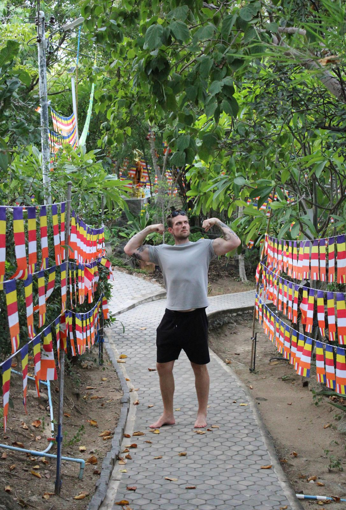

“Zijn blik raakte me tot in mijn ziel. Hij heeft me denk ik wel 30 min strak aangekeken.”
— VERONTRUSTE THEATERBEZOEKER[ 00 ] SEARCH FRIENDLY INTRO
Wie is hij?.
Jordy Riensema is een Nederlandse stand-up comedian die te boeken is voor comedyavonden, bedrijfsfeesten, evenementen en ceremonies. Zoek je een comedian voor een event, een bedrijfsoptreden of een avond waar iets meer moet gebeuren dan alleen beleefd knikken.dan is dit je man.
[ 01 ] ABOUT
Que?
Jordy Riensema (1993) is geboren in Almere en woont tegenwoordig in Heemstede. Van real-ass ghetto shit naar echte elitaire kak, zoals hij het zelf noemt.
Hij is vader, culinair docent en iemand die normale situaties moeiteloos weet op te blazen tot iets wat voelt als een maatschappelijke noodsituatie.
Op het podium doet hij alsof hij alles doorheeft. In het dagelijks leven is dat aantoonbaar minder vaak zo. Dit is nu zijn businessmodel
[ 02 ] UNSOLICITED PRAISE
“Ik kwam voor comedy en ging weg met het gevoel dat ik misschien mijn leven anders moet inrichten.”
— IEMAND MET ONVERWACHTE ZELFREFLECTIE“Een zeldzame combinatie van overmoed, warmte en seksuele verwarring.”
— REGIONAAL BEKENDE BRON“Hij weet het publiek echt te raken. Echt zo van: WOW. Like bam! In your face.”
— MAN DIE DE NEDERLANDSE TAAL NIET MACHTIG IS[ 03 ] SERVICES
Wat doet hij dan?
Vooral stand-up comedy. Verhalen over vaderschap, werk, relaties en waarom mensen zich gedragen alsof ze hoofdrolspelers zijn in een film die niemand kijkt.
Jordy trekt alledaagse dingen volledig uit verhouding en weet ze vervolgens toch weer irritant herkenbaar te maken.
OOK INZETBAAR VOOR
- Dagvoorzitterschap
- Gastspreker
- Trainer
- Onderwijsspecialist
- Officieus trouwambtenaar
Maar laten we eerlijk zijn: dat zijn gewoon side quests.
[ 04 ] PHILOSOPHY
Waarom doet hij dat?
Omdat het zonde is om dit niveau van genialiteit voor jezelf te houden.
De wereld is er namelijk wel aan toe: een witte, middeljarige, gezonde man uit een welvarende gemeente die eindelijk even komt uitleggen hoe het zit en wat er moet gebeuren.
SCHERP
DROOG
WARM
ONNODIG OVERTUIGD
VERBAZINGWEKKEND REPRESENTATIEF
[ 05 ] VISUALS



[ 06 ] VIDEO EVIDENCE
Is er beeldbewijs?
Ja dus. Voor mensen die liever eerst visueel bevestigd krijgen dat dit geen uit de hand gelopen LinkedIn-profiel is: hier is gewoon een video.
Kijk. Luister. Trek je conclusies. Boek daarna in een vlaag van helderheid.
[ 07 ] BOOKING MACHINE
Comedian boeken? Dit is het moment.
Jordy is te boeken voor comedyavonden, bedrijfsfeesten, evenementen, dagvoorzitterschap en ceremonies.
- Comedyavonden
- Bedrijfsevents
- Bedrijfsfeesten
- Presentatie / hosting
- Ceremonies en bruiloften
BOOK DIRECT
Zet iets in gang
Mail voor beschikbaarheid, speeldata, maatwerk of een boekingsaanvraag.
Mail voor boeking Bel directSnelle reactie = professioneel. Trage reactie = artiest.
[ 08 ] FAQ
Waarvoor kun je Jordy boeken?
Voor stand-up comedy, events, bedrijfsoptredens, dagvoorzitterschap en ceremonies.
Alleen voor comedyclubs?
Nee. Ook bedrijven, events en bruiloften kunnen prima eindigen in een goed idee.
Hoe neem ik contact op?
Via mail, telefoon of Instagram. De kans op reactie is oncomfortabel groot.
[ 09 ] CONTACT